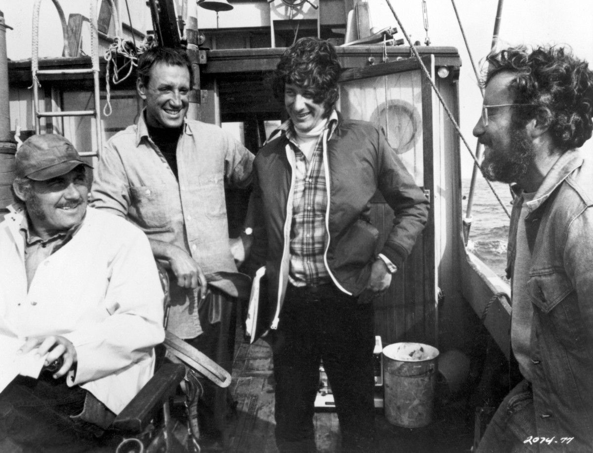
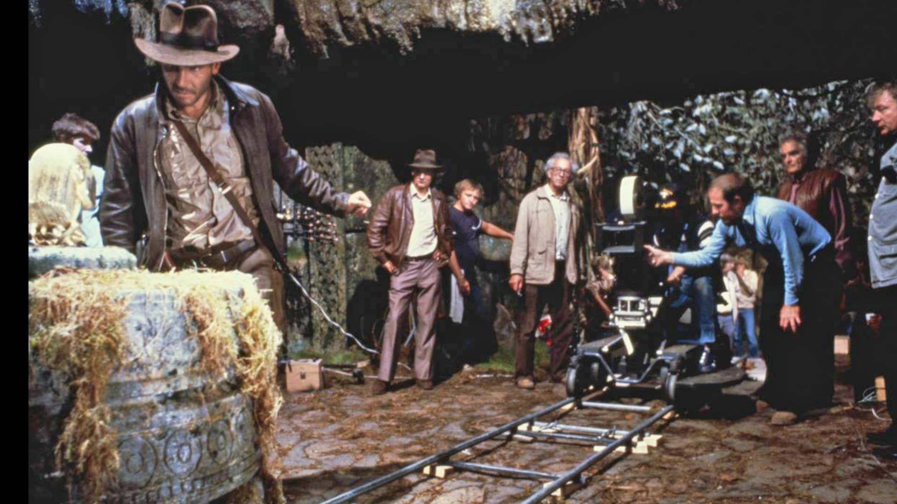
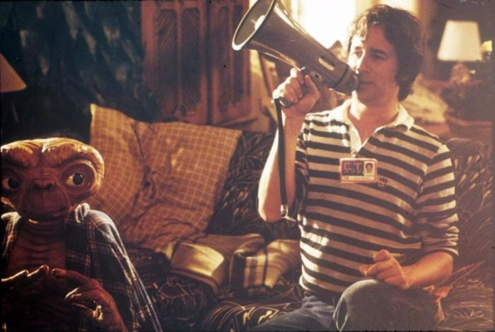
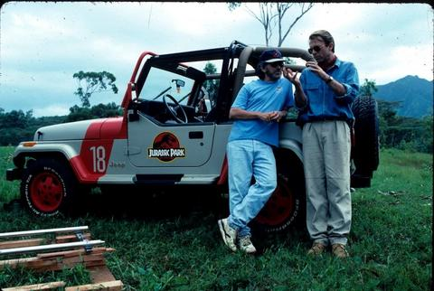
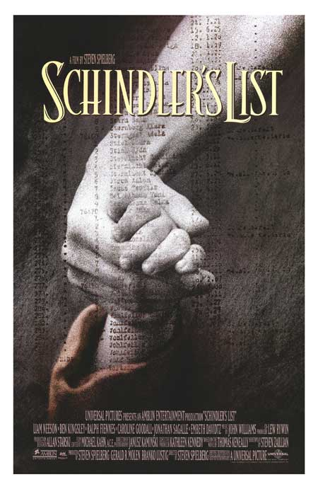

Steven Allan Spielberg was born in Cincinnati, Ohio on December 18th, 1946. As a child, Spielberg quickly developed an interest in filmmaking, and by his teen years won a prize at a film festival for his 40 minute war film Escape to Nowhere (1962). As he got older he continued to create small budget films, and one called Amblin' (1968), caught the eye of a producer at Universal Studios. This allowed Spielberg to move into directing television, as well as attending college at California State College. His first two features, Duel (1971), and The Sugarland Express (1974) showed his capability as a director, and landed him his next job on Jaws. After the major success of Jaws, Spielberg continued to craft excellent work through the rest of the 70's and the 80's. These works included Indiana Jones, E.T., and more. Each of these films made him more and more successful, becoming one of the leading directors of the second half of the 20th century.

Spielberg at San Diego Comic-Con (2017)
Jaws was Spielberg's first commercially successful film. It's popularity created the term summer 'blockbuster', and helped paved the way for his career. The film is about 3 guys who are forced to hunt down a man eating shark terrorizing a small vacation town during 4th of July weekend. The film stars Roy Schieder, Richard Dreyfuss, and Robert Shaw. The production is infamous for having trouble with the animatronic shark, which eventually forced them to use more economic filmmaking styles to get the desired shots. The film went on to receive Oscars nominations, including Best Picture.

Theatrical Poster for Jaws (1975)
Posing for a photo inside the titular jaws.
Talking with actors Roy Schieder, Richard Dreyfuss, and Robert Shaw.
Close Encounters was Spielberg's next feature after the success of Jaws. It is his first foray into science fiction, and includes another great score by John Williams. This is where he begins to find himself in his films, with great hallmark Spielberg moments. The film stars Richard Dreyfuss and Melinda Dillon, and is about an alien visit that Dreyfuss's character become enthralled with. The film was released in late 1977, and at the time was buried in the success of Star Wars earlier in the year. That being said, it has become a bit of a hidden gem, especially in Spielberg's filmography.
Theatrical Poster for Close Encounters (1977)
On location with actors Richard Dreyfuss and Melinda Dillon.

VFX artists creating the alien mothership.
Raiders of the Lost Ark is the first adventure in the Indiana Jones film franchise. It was Spielberg's first collaboration with George Lucas, who wrote the story to this film. The film stars Harrison Ford as Indiana Jones and Karen Allen as Marion Ravenwood. it follows an archaeologist in the 1930's on a quest to recover the ark of the covenant before his rival Belloq and the Nazis can use it for evil. It is meant to be an homage to the old adventure serials of George Lucas's childhood. It has been widely regarded as one of the best adventure films of all time, and it showcases Spielberg's impeccable skills.
Theatrical Poster for Raiders (1981)
Surveying a miniature before going on location.
Directing the opening scene with Harrison Ford.
E.T. is a family adventure film that is the epitome of a Spielberg film. It has all of the ingredients of his style, with a young boy as the main character trying to find his way in the world, but is visited by an alien, who he befriends an eventually saves from the U.S. government. These ideas became key to Spielberg's future films. The film stars Henry Thomas as a Elliot, a boy who discovers E.T., and befriends him. They are eventually forced to escape the government and help return E.T. to his spaceship which will bring him home. This film showcases Spielberg's ability to direct young actors.
Theatrical Poster for E.T. (1982)
Talking with young actress Drew Barrymore.
Directing a Scene with the titular character.
Jurassic Park was Spielberg pushing the envelope of visual effects. The dinosaur scenes, and especially the T-rex chase, are still some of the most impressive VFX shots in cinema. The film is also a great adventure flick, and still includes a heart warming story at the center of it. Another box office hit, making over 1 billion dollars. The work ILM did on this film changed filmmaking forever, and pushed the medium forward into a more digital age. It is known to have inspired other filmmakers to make their films using this new technology, including George Lucas (who was inspired to create the Star Wars prequels).
Posing with the injured dinosaur featured in the film.
Talking with actor Sam Niell on set.
Schindler's List shows Spielberg is capable of making a hard hitting, serious drama. Not only that, but also depicting historical events with the upmost respect and dignity for those involved. The film is about Oskar Schindler, and how he was able to save Jews from the holocaust by employing them in his factory. The film is known as a brutally honest depiction of the event, and was critically acclaimed. It went on to win the Oscar for Best Picture, and won Spielberg an Oscar for best director.

Talking with actors Liam Neeson and Ben Kingsley.
Directing extras on location.
While he is known as a director, Spielberg has produced plenty of films and television shows over the years. Notable films he has produced are The Goonies, the Back to the Future series, Who Framed Roger Rabbit, Gremlins, The Land Before Time, and the list can go on and on. He produces films through his production company called Amblin, named after his short film that he made called Amblin' (1968). It was founded in 1981, and he has used the company to produce many of his films since then. Some of these include Saving Private Ryan, Men in Black, Hook, Catch Me if you Can, and more. He was also an avid television producer, doing many animated television shows. Some of these include Animanics, Freakazoid!, Pinky and the Brain, and more.

Poster for Back to the Future (1985)
In 2001, Spielberg helped develop and produce (with Tom Hanks) the HBO miniseries Band of Brothers. Based on the book of the same name, the series is about the men of Easy Company and their journey from camp Camp Toccoa, Georgia to them taking the Eagles Nest. The 10 part miniseries also includes interviews with the surviving members of easy company. The series stars Damian Lewis as Major Richard "Dick" Winters, Ron Livingston and Lewis Nixon, Donnie Wahlberg as Carwood Lipton, and many more. When released, it was widely considered a commercial and critical success. It is also considered to be one of the best depictions of the Allied campaign in Europe after the D-Day landings. it is also known for its incredible visuals and pushed the envelope for what a television miniseries could do.

Poster for Band of Brothers (2001)
Spielberg was one of the pioneers of this new era of filmmaking in America. New Hollywood was a film movement that came about during a time when Hollywood was losing touch with America's youth. These new Hollywood directors gained notoriety due to their young age, which allowed them to connect more directly with the audience. This era also began a push for more individualist films that are controlled by the director, which is a change from the previous producer-driven system from the past. These films also changed the subject matter, leaning more towards more rebellious screenplays, and ones that would've been considered too inappropriate prior to the 60's and 70's. Other directors like Spielberg who are a part of this era are Francis Ford Coppola, Martin Scorsese, Brian De Palma, John Carpenter, George Lucas, Ridley Scott, David Lynch, and many more.
Young Spielberg working in his office.
Over the course of his career, Spielberg collaborated with a lot of other filmmakers and actors. The most famous relationship he had was with George Lucas, who created Star Wars. He and Lucas collaborated most famously on the Indiana Jones series, which Spielberg would direct and Lucas would write the story. He also has collaborated with John Williams for almost all his film scores. Together they have done countless films, with Williams developing many memorable scores like Jaws, E.T., and Indiana Jones. His go to leading man has seemed to be Tom Hanks, with whom he has collaborated in a plethora of films since the 1990's. These include Saving Private Ryan, Catch me if you Can, The Terminal, Bridge of Spies, and The Post. He has also worked with producer Kathleen Kennedy on films like E.T., Jurassic Park, The Color Purple, Empire of the Sun, and more.
Spielberg with actor/producer Tom Hanks.